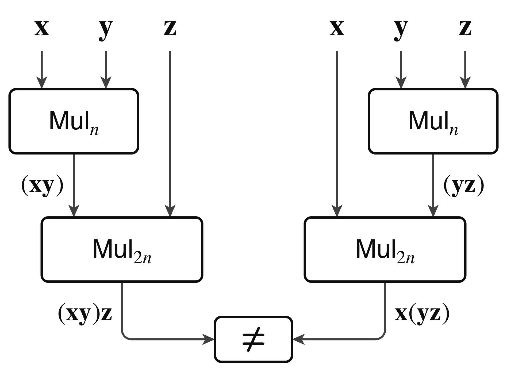
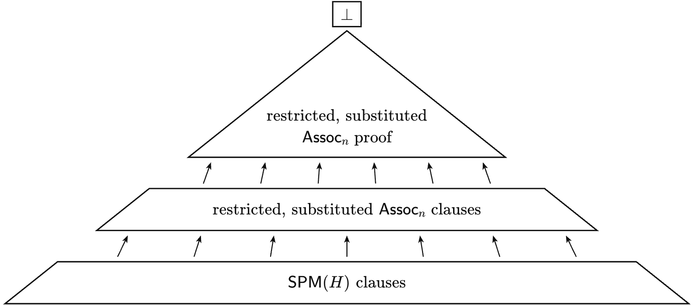

Appendix B provides an AI-generated (Claude) Lean 4 formalization of the main lower-bound theorems, released as a GitHub repository.
Abstract
SAT solvers are empirically known to perform poorly when reasoning about multiplication. Yet for over a decade we have lacked a theoretical explanation for this phenomenon. CDCL SAT solvers implicitly search for resolution proofs, and no lower bound on proof size has ruled out the existence of short proofs that solvers simply fail to find. We give the first lower bound of this kind by showing that general resolution proofs of the associativity of $n$-bit multiplication require size $2^{Ω((n/\log n)^{1/4})}$. This lower bound holds for a broad class of multiplier encodings based on partial product summation, including the standard array and Wallace-tree multipliers used to bit-blast multiplication in SMT solvers. This result resolves an open problem of Beame and Liew. The proof constructs a reduction from a perfect-matching principle on bounded-degree bipartite expander graphs to multiplier associativity. Itsykson, Slabodkin, and Sokolov proved that this principle is hard for resolution. The lower bound for multiplier associativity follows. The same reduction, when combined with Håstad's recent lower bound for the perfect-matching principle of the odd grid, yields an exponential lower bound for multiplier associativity in the stronger bounded-depth Frege proof systems.
Problem
SAT solvers perform poorly on multiplication, but no proof-size lower bound had ruled out short resolution proofs for basic multiplication properties. Beame and Liew posed as an open problem whether associativity of multiplication is hard for resolution.
Approach
The authors define strip-local multiplier encodings, a class that includes array and Wallace-tree multipliers. They reduce a star-local extension of the perfect-matching principle on bounded-degree bipartite expanders to the associativity formula, using a restriction built from Golomb-ruler index maps. Known width lower bounds of Itsykson–Slabodkin–Sokolov then transfer to the associativity formula. The main theorems are formalized in Lean 4, with the formalization generated by Claude.

Figure 2: The associativity instance \mathsf{Assoc}_{n} . The two inner multipliers \mathsf{Mul}_{n} compute \mathbf{x}\mathbf{y} and \mathbf{y}\mathbf{z} , the two outer multipliers \mathsf{Mul}_{2n} compute (\mathbf{x}\mathbf{y})\mathbf{z} and \mathbf{x}(\mathbf{y}\mathbf{z}) , and the miter variables e_{i} , with the long miter clause e_{0}\vee\cdots\vee e_{4n-1} , assert that (\mathbf{x}\mathb

Figure 4: The refutation of \mathsf{SPM}(H) , the star-local extension of perfect matching. This refutation uses \mathsf{SPM}(H) to derive a subclause of each clause of the restricted, substituted \mathsf{Assoc}_{n} in a constant number of steps. The restricted, substituted refutation of \mathsf{Assoc}_{n} then derives \bot from these clauses.
Results
Resolution refutations of n-bit multiplier associativity require size 2^{Ω((n/log n)^{1/4})}, which resolves the Beame–Liew open problem. Combining the same reduction with Håstad's odd-grid lower bound gives exponential lower bounds in bounded-depth Frege.